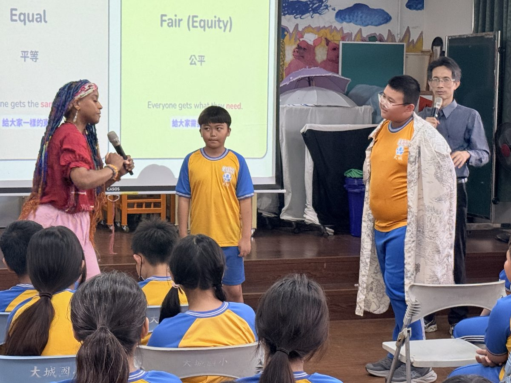

Practicum & volunteering
We help ESL certification students complete their practicum hours online — through observations, tutoring, and co-teaching with schools in rural Taiwan. A genuine win-win.
Three ways to take part
Observe live English classes from rural Taiwanese schools via Google Meet. Elementary classes run 40 minutes, junior high up to 50, with special programs up to an hour — during the school year and breaks alike.
Many of our students rarely meet a native English speaker. We match you with learners of varying ages and levels for conversation practice, with flexible scheduling around the 12–13 hour time difference.
Our most advanced option pairs you with a Taiwanese English teacher in an elementary or junior-high classroom. You’ll plan lessons that build listening and speaking skills using varied media — all via Google Meet.
A recognized leader in TEFL practicum
“My Culture Connect was selected for the International TEFL Academy’s Charity Highlights, connecting aspiring teachers with learners in rural Taiwan.”
— International TEFL Academy, Q3 2022From our alumni
“MCC helped me complete my practicum hours with wonderful coordination between the team and the remote teachers. The variety of lessons and the students’ progress were incredible — I’ve kept working with MCC ever since.”
TEFL-certified teacher · Boston, MA
“As a retired educator I volunteer in Changhua County and teach lessons remotely. After more than a decade as a TEFL volunteer, I can say this work changes lives — on both sides of the screen.”
Volunteer educator · Wisconsin
For students & young volunteers
Guiding Hands connects high-school and college students from English-speaking countries with Taiwanese elementary and middle-school students.
Volunteers serve as mentors and friends, building international friendships while developing their own communication and leadership skills. It’s a program built on mutual growth and cultural exchange.
Get involved
What to do next
Email our Executive Director, Luke Lin, and tell us your city, state, and country — we’ll help you find the right fit.
Email Luke Lin Availability form